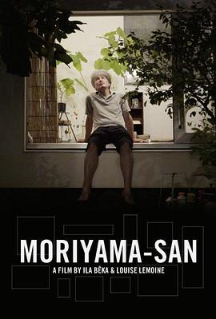

森山桑 / MORIYAMA-SAN
虽然但是，tokyo市中心搞了块block，而且找SANAA 设计、建了10个建筑，其中6个租出去了，我只能说太羡慕了。建筑的设计确实很满足Moriyama独特的需求。地下室真是爱了。希望有一天也可以拥有这样的小世界。
作品信息
| 导演 | 伊拉·贝卡 / 路易斯·雷蒙内 |
| 主演 | Yasuo Moriyama / Satoshi Takae / Nao Taniguchi |
| 类型 | 纪录片 |
| 制片国家/地区 | 意大利 |
| 语言 | 日语 |
| 上映日期 | 2017(法国) |
| 片长 | 63分钟 |
| IMDb | tt37175893 |
说过什么
2022-06-19 20:30:34
看过 · 时间来自广播，短评来自标记页
虽然但是，tokyo市中心搞了块block，而且找SANAA 设计、建了10个建筑，其中6个租出去了，我只能说太羡慕了。建筑的设计确实很满足Moriyama独特的需求。地下室真是爱了。希望有一天也可以拥有这样的小世界。
最后一次看到是 2026-08-01T11:05:04+10:00 · 豆瓣原页